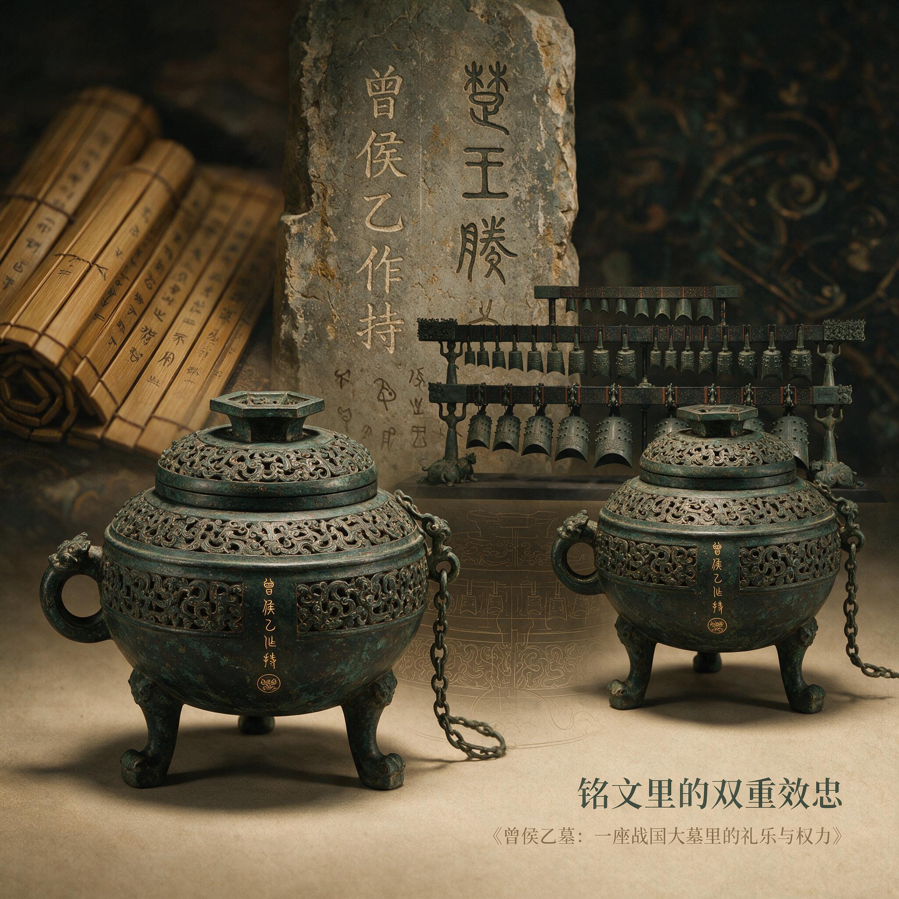

第 5 章
铭文里的双重效忠
拓片铺在桌上。灯光从侧面打过来，字口里的墨色浓淡不一。六个字，排列工整，笔画硬朗——曾侯乙作持用终。没有西周铭文惯用的“子子孙孙永宝用”，没有“眉寿万年”的吉祥套话，甚至没有提到任

曾侯乙甬钟铭文拓片
AI 生成插图，非史实影像。
何祖先或神灵。就是一个君主在说：这东西我做的，我用到底。这句话在曾侯乙墓里出现了多少次？四十五件甬钟上全有，一百二十五件青铜礼器、用器及其附件上的一百一十七处铭文里反复出现。如果算上兵器、车马器上的刻划，总数超过两百处。一座墓葬，两百多次重复同一句话。这不是啰嗦。这是刻意的。
诸位，咱们今天要聊的，不是青铜器怎么铸造，不是铭文怎么认读。咱们聊一个更扎心的问题：一个人，一个小国的君主，在活着的时候就知道自己死后要被两个大国审视，他会在陪葬品上写什么？曾侯乙的答案就刻在两百多件器物上。但这些答案不是统一的标准答案——他给不同的器物配了不同的话，对不同的人说不同的词。就像今天一个公司老板，面对银行、面对政府、面对家人，说的话都是真的，但侧重点完全不同。
曾侯乙墓出土的有铭器物超过二百件，铭文总字数逾万，是战国早期墓葬中铭文最丰富的一处。注意这个“最”字——不是之一，是唯一。同时期的楚国大墓、中原诸侯墓，没有一座在铭文数量和密度上能跟它比。这不是偶然的陪葬习惯，这是一场精心编排的文字表演。而这些铭文，不是装饰性的吉祥话。---
咱们先看第一类：曾侯自作器。曾侯乙作持用终——这句话的格式在整座墓里占绝对多数。编钟上刻，鼎上铸，簋上錾，连兵器上都有。语气简洁到什么程度？连个“唯”字起头都不要。“唯正月丁亥”是西周以来铭文的标准开场，曾侯乙全给省了。他只要三样信息：谁做的——曾侯乙；做什么——作器；怎么用——持用终。“持用终”这三个字特别值得琢磨。西周青铜器铭文的结尾通常是希望子孙永远宝用，强调器物要传给后代，要把家族的荣耀延续下去。但曾侯乙不这么说。他说的是“我用到底”——器物跟我的生命绑定，我死了它跟着下葬，不传子孙，不建家族纪念堂。这不是自私。这是政治选择。
曾国在战国早期已经是一个被楚国深度渗透的小国。如果曾侯乙在铭文里写希望子孙永宝用，就等于在宣告曾侯家族要世世代代延续下去——这在楚国人眼里是什么？是野心。是你不甘心做附庸的信号。但如果不写铭文，等于放弃君主对礼器的命名权，等于承认自己只是个替楚国看守器物的管家。
所以曾侯乙选了第三条路：写，但只写自己。强调器物私有，强调使用期限止于自身，不承诺未来，不宣示世代传承。楚国人来检查，看到的是一个只关心自己使用、没有政治野心的君主；周王室的使者来看，看到的是曾侯还在坚持君主作器的礼制传统。同一句话，两套解读，曾侯乙安全地站在中间。这不是瞎猜。
咱们看一个对比：同一时期的楚国贵族墓葬，铭文风格完全不同。楚国高等级墓葬出土的有铭器物，要么不写墓主名字、只写官职或族氏，要么写楚王赏赐的记录。楚国的逻辑是：器物的合法性来自楚王的授予，不是来自使用者本人。但曾侯乙的铭文反其道而行——每件器物都强调“曾侯乙”这个人，强调他作为君主的独立作器权。这不是文化习惯的差异。这是用文字划出的边界：在器物归属这个层面上，曾侯乙不是楚王的代理人，他是拥有独立祭祀权的君主。---
好，第一类铭文看懂了——那是曾侯乙对内的身份陈述。现在看第二类：楚国赗赠器。这类铭文数量不多，但信息量极大。代表器物就是上一章仔细看过的那件楚惠王镈钟，铭文三十一字。咱们拆开读。楚王酓章——酓章就是楚惠王的名字。楚国王族姓芈，熊氏，酓是熊的异体字。楚惠王五十六年，也就是公元前433年，曾侯乙去世，楚惠王铸造了这件镈钟作为赗赠。为曾侯乙制作宗庙祭器——注意这个词：宗彝。彝是青铜礼器的通称，宗彝特指用于宗庙祭祀的礼器。楚王为曾侯制作宗彝，意味着楚国承认曾侯有宗庙、有祭祀权。在周代礼制里，宗庙是君主合法性的核心象征——祭祀权就是统治权。
但别急着感动。下一句才是关键。奠之于西阳——奠放在西阳。西阳是曾国都城，也就是今天的随州一带。“奠”这个字在商周文字里有特定含义：从商代开始，在附属国族分布区通过置奠正式建立起来的行政区，统称“多奠”，由商王朝派人直接管理。
到周代，“奠”的含义虽然有所弱化，但仍然带有安置、措置的色彩——不是平等赠送，而是上级对下级的安排。楚王把镈钟奠在西阳，意思是：这件东西我放在你那里，但它的合法性来源于我。就像今天大国援助小国，援助物资上印着援助国的国旗，受援国不能说这东西是我自己买的。希望曾侯永远持有使用、用以祭祀——这句话表面上是祝福，但跟曾侯自作器的“持用终”一对比，差别就出来了。曾侯自己说“持用终”，主语是我，强调的是我的主动持有；楚王说希望他永远持用享，主语变成了他，是楚王允许曾侯永久使用。一个是“我自己用到底”，一个是“我允许你用下去”。两句话搁在一起，权力关系一目了然。---
但这还没完。“奠之于西阳”这四个字里还藏着另一层意思：西阳这个地名被写进铭文，本身就是一种政治宣告。曾侯自作器的铭文从不提地名。曾侯乙作持用终——在哪儿作的？在哪儿用的？一概不说。因为说了就等于承认自己的活动范围仅限于某个具体地点，等于承认自己的统治疆域是有限的、可标识的。但楚王镈钟明确写出西阳，等于在地图上给曾国钉了一个钉子：你的都城在这里，你的统治范围就在这里，别越界。
这不是过度解读。咱们看同时期的楚国行政管理方式：楚国在征服汉东诸国后，通常会保留当地君主的祭祀权，但要求这些君主在铭文和文书里明确标识地理位置。为什么？因为楚国需要一套清晰的地理信息系统来管理附庸国——谁在哪里、管多大地方、向谁负责。楚王把西阳写进镈钟铭文，相当于给曾国发了一张带有精确坐标的许可证。许可证是恩赐，也是枷锁。---
现在把第一类和第二类铭文放在一起看。曾侯乙自己做的器物，铭文强调我、强调私有、强调不传代、不涉及任何外部政治关系。楚王赠送的器物，铭文强调我允许你、强调地名、强调宗主权。这两套话术在同一座墓里并存，不是矛盾的——是互补的。曾侯乙用自作器铭文向国内贵族和周边小国宣示：我还是君主，我还有独立祭祀权，我的器物不是楚国赏赐的。同时他用楚国赗赠器的铭文向楚国表态：我接受你的宗主权，我接受你的地理定位，我不越界。两套话术，两个听众群，两条效忠线索并行不悖。---
但故事还没完。还有第三类铭文——这类数量最少，但最要命。曾侯乙墓出土了一件鼎，铭文是：曾侯乙作王姬宝鼎。六个字，信息量炸裂。王姬——周王室的女儿。《左传》《国语》里反复出现这个词，特指周天子家族嫁出去的闺女。按照周代称谓，王姬的“王”指周天子，“姬”是周王族的姓。周王室的女儿嫁给诸侯，在夫家仍称王姬，这是身份标识。曾侯乙为一位周王室的女儿做了这件宝鼎。这位王姬是谁？几乎可以肯定是曾侯乙的夫人。也就是说，曾国直到战国早期——直到曾侯乙这一代——还在跟周王室联姻。
这个事有多严重？回顾一下前几章讲过的背景：曾国在西周早期是周王室设在汉东的前哨，负责监控南方的楚国和淮夷。但到了春秋时期，楚国崛起，曾国所在的随枣走廊成了楚军北上的必经之路。从楚武王到楚庄王，楚国人反复攻打曾国，最终在公元前640年前后迫使曾国成为附庸。从那以后，曾国在政治上服从楚国已经超过两百年。
两百年，八九代人，曾国君主一直向楚国称臣纳贡，一直跟随楚军出征，一直使用楚式礼制。按照常理，曾国应该早就跟周王室断了联系——你都是楚国的附庸了，还跟周天子保持联姻，这不是找打吗？但曾侯乙偏偏就娶了王姬，还专门为她铸鼎，还在鼎上明明白白写下王姬两个字。这件鼎放在墓里，楚国人来吊唁的时候看得见吗？当然看得见。那楚国人为什么不翻脸？因为曾国玩了一套极其精妙的政治平衡术。---
把第三类铭文跟前两类放在一起看，曾国的策略就清晰了。对楚国：接受宗主权，接受赗赠，接受楚式称谓，接受地理定位。镈钟铭文就是曾国写给楚国的保证书——你看，我承认你的权威，我把你送的钟挂在编钟架最显眼的位置，我把奠之于西阳刻在青铜上永不磨灭。对周王室：保持联姻，保持姬姓认同，保持礼乐正统。
王姬宝鼎就是曾国写给周天子的效忠信——你看，我还是姬姓诸侯，我还是周王的女婿，我还在使用周式礼器、周式铭文格式。对自己：强调曾侯这个爵称的延续性，强调祭祀权的不中断。曾侯乙作持用终在墓里重复两百多次，每一次重复都是在告诉曾国贵族和后代：君统未断，社稷未亡。
三条线索同时运行，互不否定，互不冲突。曾国没有在周、楚之间做非此即彼的选择——它同时维持两条效忠线索，用不同的铭文格式应对不同的政治对象。
这种策略的风险极高。一旦楚国翻脸，所有周式符号都会成为罪证——你跟周王室联姻？你称王姬？你使用周式礼制？这些都是对楚国不忠的证据。同样，一旦周王室复兴，曾国跟楚国的关系也会被追究。但风险高，收益也高。因为楚国需要曾国。---
为什么楚国需要曾国？这就要回到随枣走廊的地理位置。随枣走廊是连接南阳盆地和江汉平原的狭长通道，北通周王室所在的洛阳，南达楚国核心区所在的荆州。谁控制这条走廊，谁就控制了南北交通的咽喉。楚国征服曾国之后，完全可以灭掉曾国、直接设县管理——楚国在春秋中晚期灭掉的小国多了去了，申、息、邓、绞、州、蓼，哪个不是直接吞并？为什么偏偏留下曾国？
因为曾国有一个不可替代的价值：它是姬姓诸侯，是周王室分封的正统国家。楚国如果直接吞并曾国，等于在周天子的眼皮底下消灭了一个姬姓封国——这在春秋早期会招致中原诸侯的联合讨伐，在春秋晚期虽然没那么严重了，但仍然会损害楚国的国际形象。但如果保留曾国作为附庸，楚国就可以通过曾国来经略汉东——曾国的君主替楚国征税、征兵、维持秩序，楚国人躲在幕后操控一切。这就是典型的间接统治。曾国君主在台前维持姬姓诸侯的外壳，楚国在幕后掌握实权。
曾侯乙娶王姬、用周礼、铸周式铭文，这些行为不仅不被楚国禁止，反而是楚国需要的——你越像正统诸侯，你的统治越有合法性，你替我管理汉东就越有效率。但这里面有一个微妙的平衡点：曾国可以维持周式外壳，但不能真的倒向周王室；可以接受楚国宗主权，但不能完全放弃自己的祭祀权。一旦平衡打破，要么楚国翻脸灭曾，要么曾国失去统治合法性、内部崩溃。曾侯乙墓的铭文系统，就是这套平衡术的文字版本。---
现在可以回答本章开头提出的那个问题了：这些铭文是不是一套精心编排的政治文本？那些认为曾侯乙墓只是对楚文化实用主义模仿的观点，最大的漏洞就在这里。如果曾国只是被动模仿楚国、炫耀资源，它完全没必要在铭文上做这么复杂的设计——直接用楚式铭文格式就行了，或者干脆不写铭文。楚国本土的高等级墓葬里，有铭器物的比例远低于曾侯乙墓，因为楚国贵族不需要用文字来证明自己的身份——他们的身份由楚王授予，不需要自我宣示。
但曾侯乙需要宣示。他需要在每一件核心礼器上刻下“曾侯乙”三个字，需要在楚王送的镈钟旁边摆上自己作的甬钟，需要在王姬鼎上保留王姬这个周式称谓。这些不是文化习惯的惯性延续，而是有意识的政治编码。
证据就在铭文的分布规律上。曾侯乙墓出土的有铭器物超过二百件，但铭文不是均匀分布的。核心礼器——编钟、列鼎、簋——几乎全有铭文，而且铭文格式高度统一：曾侯乙作持用终。但日常用器——漆木器、陶器、竹简——几乎没有铭文。
兵器上有刻划铭文，但格式简化到只有“曾侯乙”三个字或一个“曾”字。这个分布规律说明什么？说明铭文不是随意刻的，而是有选择地出现在需要身份宣示的器物上。礼器是君权的象征，是祭祀场合中贵族们看得见的东西，所以必须刻上曾侯乙作。兵器是军队的装备，需要标识归属以区别于楚军的兵器，所以刻上曾侯乙。日常用器不进入公共视线，不需要宣示身份，所以不刻。这种选择性本身就是一种编码策略：在需要表明身份的场合密集发声，在不需要表明身份的场合保持沉默。---
再看铭文的内容分布。曾侯乙作持用终出现在甬钟、鼎、簋等核心礼器上。楚王酓章为曾侯乙作宗彝的铭文只出现在那件镈钟上。曾侯乙作王姬宝鼎只出现在那件鼎上。三类铭文各自锁定特定的器物类型，互不混淆。曾侯不会在楚王送的镈钟上加刻自己的铭文——那等于抹掉楚王的痕迹，是挑衅。楚王不会在曾侯自作器上加刻自己的铭文——那等于没收曾侯的作器权，是吞并的前奏。王姬鼎独立于两者之外，既不是楚王所赠、也不是曾侯自用，而是专门为夫人制作——它单独构成第三条线索。三类铭文，三个政治对象，三种话语策略，在同一座墓里各司其职、并行不悖。这不是零散的记录。这是用文字编织的双重效忠网络。
说到这里，得正面回应一下那个反方观点了。有人说：曾侯乙墓的器物组合主要是曾国对楚文化实用主义模仿与资源炫耀的产物，缺乏自觉的政治编码意图，其礼乐特征更多是战国早期区域文化趋同的自然结果。这个说法有三处站不住脚。
第一，如果是自然趋同，铭文应该也趋同——但曾侯乙墓的铭文恰恰跟同时期楚墓差异巨大。楚墓有铭器少、铭文简短、多记录赏赐关系；曾侯乙墓有铭器多、铭文密集、强调自作自用。这不是趋同，是刻意保持差异。第二，如果是资源炫耀，铭文内容应该炫耀财富和功绩——但曾侯乙作持用终没有夸耀任何东西。
它不列战功、不记赏赐、不提祖先、不说吉祥话。这恰恰是克制的政治表达，不是炫耀性的资源展示。第三，如果是被动模仿，铭文分布应该无规律——但铭文的选择性分布高度精确：核心礼器有、日常用器无；面对楚国的话语用镈钟、面对周室的话语用王姬鼎、面对自己的话语用自作器。这种精确性不可能是无意识的文化惯性。
所以，自然趋同说解释不了曾侯乙墓铭文系统的复杂性和精确性。只有把铭文理解为有意识的政治编码，才能解释为什么三类铭文会以这种特定方式组合在同一座墓里。
现在站在曾侯乙的立场上想一想。公元前433年，曾侯乙去世。在他生前，曾国已经在楚国阴影下生存了两百多年。两百多年里，多少姬姓诸侯国被灭——蔡国、陈国、许国、申国、息国，哪个不是周王室分封的正统国家？哪个不是在楚国扩张中灰飞烟灭？曾国活下来了。不仅活下来了，还在战国早期维持了相当规模的礼制体系——编钟六十五件、列鼎九件八件组合、四室椁结构、大量殉人。
这套东西放在中原诸侯眼里也许不算什么，但放在汉东附庸国里，绝对是顶配。怎么做到的？答案就在这些铭文里。曾国对楚国说：我服从你，我接受你的宗主权，我把你送的钟挂在最显眼的位置，我把奠之于西阳刻在青铜上。你看，我没有野心。
曾国对周王室说：我仍然是姬姓诸侯，我仍然娶王室的女儿，我仍然使用周式礼制和铭文格式。你看，我没有背叛。曾国对自己人说：我还是曾侯，我的祭祀权没有中断，我的君统没有断绝。曾侯乙作持用终——这句话刻在两百多件器物上，每一件都是对曾国贵族和后代的一次确认：社稷犹在。
三套话术同时运行，曾国活到了战国中期——比绝大多数姬姓附庸国都活得长。这就是铭文的力量。
但咱们也得说清楚另一面：这套双重效忠网络的代价是什么。代价是曾国永远不能真正独立。你同时向两个权威效忠，就等于永远不能彻底倒向任何一方。周王室衰微了，曾国不能站出来号召诸侯勤王——因为楚国人盯着呢。楚国扩张了，曾国不能全心投入楚国体系——因为周王室那边还有联姻关系，国内贵族还有姬姓认同。
这种状态像什么？像一个人站在两条船的船头，两条船正在慢慢分开，他只能把腿劈得越来越大。暂时不会落水，但永远站不稳。曾侯乙墓里那些铭文，就是这种劈腿站姿的文字记录。曾侯乙作持用终——这句话重复了两百多次，每一次重复都在强调君主的独立身份。
但恰恰是这种密集的重复暴露了焦虑：如果身份真的稳固，不需要反复确认。只有身份受到威胁的人，才会在每一件器物上刻下自己的名字。就像今天一个人反复在社交媒体上发“我很幸福”，你可能就要怀疑他是不是真的幸福了。
这种劈腿站姿的代价，不只是心理上的焦虑。咱们看一个具体的细节：曾侯乙墓里出土的兵器，戈、戟、矛、殳、箭镞，总数超过四千件。这些兵器上也有铭文，但格式极其简单——要么刻“曾侯乙”三个字，要么只刻一个“曾”字。跟礼器上那套完整的“曾侯乙作持用终”比起来，兵器铭文像是没写完就被打断了。
为什么？因为兵器是打仗用的，打仗是要死人的。如果曾侯乙在兵器上刻“曾侯乙作持用终”，那这些兵器就明确归属于曾国君主——一旦楚国人征调曾军出征，曾国士兵拿着刻有曾侯乙名字的兵器上战场，楚国人会怎么想？你是来帮我打仗的，还是来宣示你曾侯的军权的？但如果完全不刻铭文，兵器在战场上跟楚军的兵器混在一起，战后无法区分归属，曾国的武库就会被楚军顺手收编。
所以曾侯乙选了一个折中方案：刻名字，但只刻最简略的形式。曾侯乙——这三个字足够标识归属，但不会刺激楚国人。一个“曾”字——这是国族标识，不是君主宣示，楚国人看了不会觉得被冒犯。
兵器铭文的这种克制，跟礼器铭文的密集宣示形成了鲜明对比。礼器是给活人看的，在祭祀场合使用，楚国人不会天天盯着曾国宗庙里的鼎上刻了什么字。但兵器是要拿到战场上用的，楚国人会看见。所以礼器上可以写“持用终”，兵器上只能写“曾侯乙”。同一个君主，同一座墓葬，在不同器物上使用不同长度的铭文——这不是文字习惯的差异，这是对不同场景下政治风险的精确计算。
再往深里想一层：曾国这套双重效忠网络，不只是应对周王室和楚国这两个外部力量。
它还有一个内部的听众——曾国自己的贵族。曾侯乙墓里殉葬了二十一名年轻女子，其中八名埋在椁室内部、紧挨着墓主棺木。这些殉人的身份，考古学界有不同看法，但有一点是共识：她们不是战俘或奴隶，而是曾侯身边的近侍或姬妾。殉葬制度在战国早期已经在中原地区基本消失，但楚国还保留着。曾侯乙墓使用殉人，说明曾国在丧葬礼仪上接受了楚式做法。但与此同时，墓里的礼器组合——九鼎八簋的列鼎制度、编钟编磬的乐悬规格——又严格遵循周礼。这就造成了一个奇怪的组合：死人用楚式埋法，礼器用周式摆法。
曾国贵族看到这个场景，会怎么理解？他们会看到君主在丧葬形式上向楚国靠拢——这是政治现实，大家都理解。但他们也看到君主在礼器规格上坚持周式传统——这是身份认同，大家也需要。曾侯乙用这种混杂的丧葬语言告诉国内贵族：我们可以在形式上妥协，但核心不能丢。形式上的妥协是为了生存，核心上的坚持是为了意义。
没有生存，意义无从附着；没有意义，生存就只是苟活。这套逻辑，曾国的贵族们读了两百年，读到曾侯乙这一代，已经不需要明说了——它刻在青铜上，埋在墓葬里，每一次祭祀、每一场葬礼，都在重复确认这套逻辑。
但逻辑再精妙，也改变不了一个事实：曾国始终是一个被限定在特定地理范围内的政权。楚王镈钟上那四个字——奠之于西阳——就像一道看不见的围墙，把曾国圈定在随枣走廊的狭长地带里。曾国君主可以在围墙内维持周式礼制、娶周室女儿、铸造刻有自己名字的青铜器，但他不能越过围墙。
考古证据很清楚：曾国的遗址分布范围，从西周早期到战国中期，不但没有扩大，反而逐渐收缩。西周早期，曾国的据点分布在随州、枣阳、京山一带，东西跨度超过一百公里。到了战国早期曾侯乙这一代，曾国实际控制的范围可能只剩下随州周边几十公里的区域。范围缩小了，但礼器规格反而提高了——曾侯乙墓的编钟规模、鼎簋数量、椁室结构，都超过了西周时期任何一座已知的曾国墓葬。
回到那件镈钟。楚惠王赠送这件镈钟的时候，大概以为它只是一件表达哀悼的礼器。他不会想到，两千四百年后，人们会通过这件镈钟的位置和铭文，读出曾国在夹缝中求生存的全部策略。
镈钟挂在编钟架最显眼的位置——这是给楚国人看的：你看，我把你送的钟供在最尊贵的地方。镈钟周围挂着四十五件曾侯自作的甬钟——这是给曾国人和周王室看的：你看，楚钟只有一件，其余都是我自己的钟。我的乐悬系统仍然是我的。镈钟铭文里写着奠之于西阳——这是楚国对曾国地理定位的固化。甬钟铭文里写着曾侯乙作持用终——这是曾国对自我身份的反复确认。
一件钟架，两种铭文，两套话语，同时发声。这不是礼乐。这是政治。这两千四百年前的文字，到今天还能读出来，还能让我们看见一个弱小国家如何在两个大国之间小心翼翼地寻找生存空间。青铜会锈蚀，竹简会腐烂，但刻在青铜上的文字留下来了，留在了一座被地下水淹没了两千四百年的墓室里。铭文里的双重效忠，就是曾国在夹缝中求生存的文本证据。
而那些没有写出来的话——那些在铭文之外的政治算计、外交权衡、君臣博弈——它们没有刻在青铜上，但它们比青铜更沉重地压在曾侯乙的椁室上方。就像那件镈钟，它挂在编钟架上最显眼的位置，但它不是整套编钟音律体系的核心。它的音高跟周围的甬钟不完全匹配，它的纹饰跟旁边的钟略有差异，它的存在本身就是一种外来力量的标记。但它被挂在那里了，被接受了，被编入了整套礼乐系统。接受外来力量的存在，同时保持自己的核心不被同化——这就是曾国用了两百年时间练成的生存技艺。而这道技艺的文字版本，就刻在两百多件青铜器上，等着两千四百年后的人们来读。